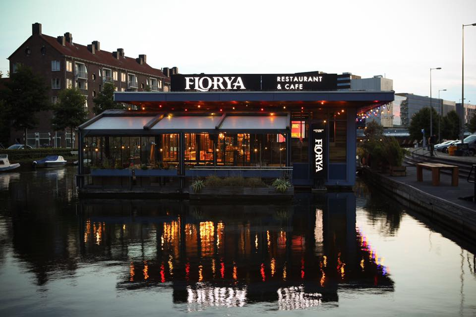
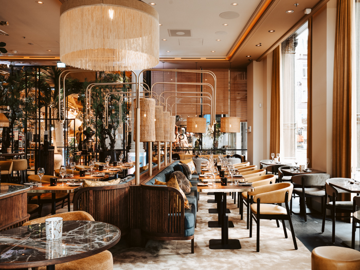

Restaurants
Een maaltijd is veel meer dan enkel een culinair moment;
het is eerder een poëtische samensmelting van smaken
en samenzijn. Stap binnen in onze culinaire wereld,
waar de kunst van smaak en gastvrijheid samenkomen
als een harmonieuze symfonie.

Florya Restaurant & Café
Florya Restaurant & Café bevindt zich in het gezellige Bos en Lommer in Amsterdam. Met zijn
stijlvolle
en
elegante inrichting en adembenemend uitzicht is Florya Restaurant topkandidaat om ieders nieuwe
favoriet
te
worden.
Genieten van een heerlijke cocktail op ons zonovergoten terras, ontspannen in de lounge of de meest
smaakvolle Turkse gerechten ervaren in ons restaurant? Voor iedereen is er genoeg te beleven bij
Florya
Restaurant!
Onze menukaart reikt uit van traditionele Turkse grill- en pangerechten tot heerlijke cocktails, van
soepen
tot frisse salades en van smaakvolle aperitiefhapjes tot delicieuze desserts.
Kortom, een bezoek aan Florya betekent keer op keer een onvergetelijke belevenis van begin tot eind.
Het algehele menu bestaat uit een aantal categorieën:
- Ontbijtgerechten
- Soepen
- Salades
- Koude voorgerechten
- Warme voorgerechten
- Pangerechten
- Ovengerechten
- Unieke smaken
- Vegetarische gerechten
- Grill gerechten
- Visgerechten
- Pasta's
- Kinder menu
- Desserts
- Aperitiefhapjes
- Cocktails/Mocktails
- Milkshakes
- Smoothies
- Iced coffee's
- Frisdranken
- Warme dranken
Bereikbaarheid
Florya Restaurant & Café ligt aan de steiger in de Erasmusgracht bij het Bos en Lommerplantsoen 10
en is
goed bereikbaar met het openbaar vervoer (tram 7, 14 en bus 15, 21). Er is één metrostation: aan de
Bos
en
Lommerweg/De Vlugtlaan. Met de auto is het café-restaurant op twee minuten rijden via de A10. Ook
kunt u
met
uw gezelschap met de boot naar Florya Restaurant varen en bij onze steiger aanmeren.
Parkeren
Er is voldoende betaald parkeergelegenheid aanwezig voor de deur. Na 19:00 kunt u op vijf minuten
loopafstand (in de omgeving van De leeuw van Vlaanderenstraat) gratis parkeren en zorgeloos
genieten.
Contact
Je kunt reserveren door te bellen naar hun telefoonnummer: 020 364 2275.
Voor vragen kun je mailen naar: info@floryarestaurant.nl.
Ook kun je het contactformulier invullen op hun
website.
Bos en Lommerplantsoen 10,
1055 SC, Amsterdam
Restobar Rouhi

Verwen jezelf en stap binnen bij Restobar Rouhi in hartje Amsterdam, aan het Spui. In dit prachtige,
monumentale pand zit ook het House of Rituals en dat merk je direct bij binnenkomst. Je stapt een
serene
wereld in met een luxe, elegante en warme uitstraling. Een geweldige, stressvrije plek in de
binnenstad,
waar je lichaam en geest tot rust komen.
Op de begane grond vind je Restobar Rouhi (wat in het Arabisch ‘mijn ziel’ betekent). Laat je
verrassen
door de Aziatische keuken met een moderne twist. Proef onze Rouhi Espresso Martini (met een geheim
Rouhi-ingrediënt) of een Kombucha Margarita en bestel er een van onze beroemde bao buns bij en je
snapt
wat we met de Rouhi-twist bedoelen. Spannende en eigentijdse combinaties, lokale producten,
verrukkelijke smaken en culinaire hoogstandjes.
Reserveren
Voor het reserveren van een tafel is er keuze uit "Lunch", "Diner" en "Kerstmenu".
Als je voor meer dan 9 personen wilt reserveren moet je contact met hen opnemen via: info@rouhi.nl.
Openingstijden
- Maandag - Gesloten
- Dinsdag-Zaterdag - 10:00-22:00
- Zondag - 11:00-17:00
Bij goed weer is het terras geopend.
Contact
Je kunt contact openemen met ze via:+31 020 705 5180 en via: info@rouhi.nl.
Adres
Restobar Rouhi is te vinden op de begane grond van House of Rituals. De ingang vind je aan het Spui.
Restobar Rouhi
Spui 10
1012 XG Amsterdam

Vegan Junkfood Bar
De Vegan Junk Food Bar is een populaire eetgelegenheid die gespecialiseerd is in het aanbieden van
veganistische alternatieven voor klassieke fastfoodgerechten. Het concept van de Vegan Junk Food Bar
richt zich op het creëren van smakelijke, plantaardige gerechten die de stijl en smaak van
traditioneel
"junkfood" nabootsen, maar dan zonder dierlijke ingrediënten.
Menu
Het menu van de Vegan Junk Food Bar omvat een breed scala aan gerechten, waaronder veganistische
burgers, hotdogs, frietjes, snacks en desserts. Ze staan bekend om hun kleurrijke en creatieve
presentatie van gerechten.
De gerechten op het menu maken gebruik van plantaardige alternatieven voor vlees, kaas en andere
dierlijke producten. Populaire ingrediënten zijn bijvoorbeeld veganistische burgers, seitan, tofu en
veganistische kaas.
Het restaurant staat bekend om het experimenteren met smaken en het aanbieden van unieke
combinaties.
Denk aan smaken zoals truffelmayonaise, veganistische cheddar, en verschillende sauzen en toppings
die
een interessante draai geven aan traditionele fastfoodgerechten.
Reserveren
Voor het reserveren van een tafel kun je op hun
website terecht.
Openingstijden
- Zondag-Donderdag - 12:00-23:00
- Vrijdag-Zaterdag - 12:00-24:00
Contact
Je kunt contact openemen met ze via: +31 6 18 95 50 02.
Adres
Marie Heinekenplein 9-10
1072 Amsterdam